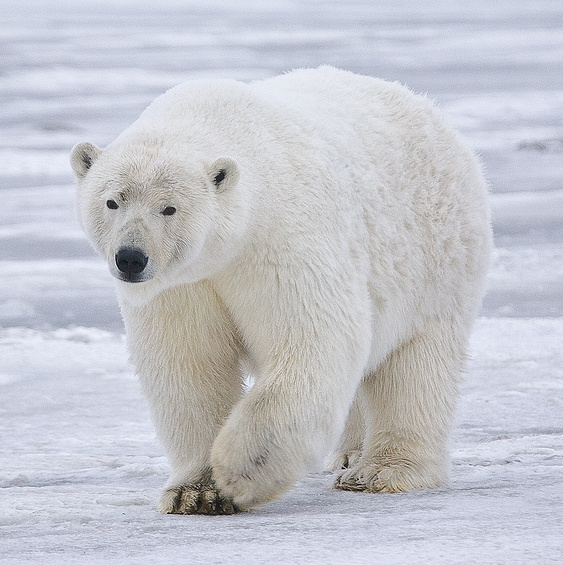

Insulation
Two layers of fur and thick blubber keep their body at about 37 °C even when the air is −40 °C.
Ursus maritimus
Meet the largest land carnivore on Earth: a marine mammal that lives, hunts and raises its young on the sea ice.
Start exploring
Polar bears live across the Arctic Circle in Canada, Alaska, Greenland, Norway and Russia. Their Latin name, Ursus maritimus, means "sea bear", and they spend most of their lives on frozen ocean rather than land.
Beneath their white-looking coat is black skin that soaks up the sun's heat, and a layer of fat up to 11 cm thick keeps them warm in water barely above freezing.
Use the arrows to follow a polar bear through the seasons.
Three adaptations that let polar bears thrive where few mammals can.
Two layers of fur and thick blubber keep their body at about 37 °C even when the air is −40 °C.
Large, slightly webbed front paws act as paddles. Polar bears have been tracked swimming for more than 600 km in one go.
They can smell a seal's breathing hole almost a kilometre away and under a metre of snow.
Select a card to read more.
A polar bear at Tiergarten Schönbrunn in Vienna.
Video: Amada44, Wikimedia Commons, CC BY-SA 4.0
Polar bears depend on sea ice to hunt seals. The Arctic is warming several times faster than the global average, so the ice forms later and breaks up earlier each year.
Longer ice-free seasons mean longer fasts. Bears lose body condition, and fewer cubs survive their first year.
Ocean currents and winds carry industrial chemicals north, where they build up in the Arctic food web. As top predators, polar bears carry some of the highest concentrations.
More shipping and oil development as the ice retreats also raises the risk of spills in a place where cleanup is extremely difficult.
Hungry bears stranded on land are drawn to towns by the smell of food and garbage, which can end badly for both people and bears.
Communities such as Churchill, Manitoba use bear patrols, secure waste storage and early warning programs to keep both safe.